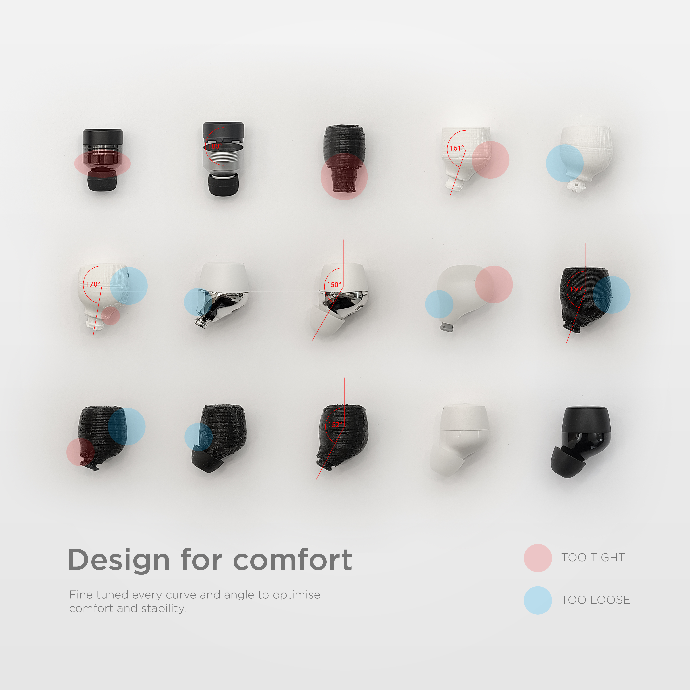
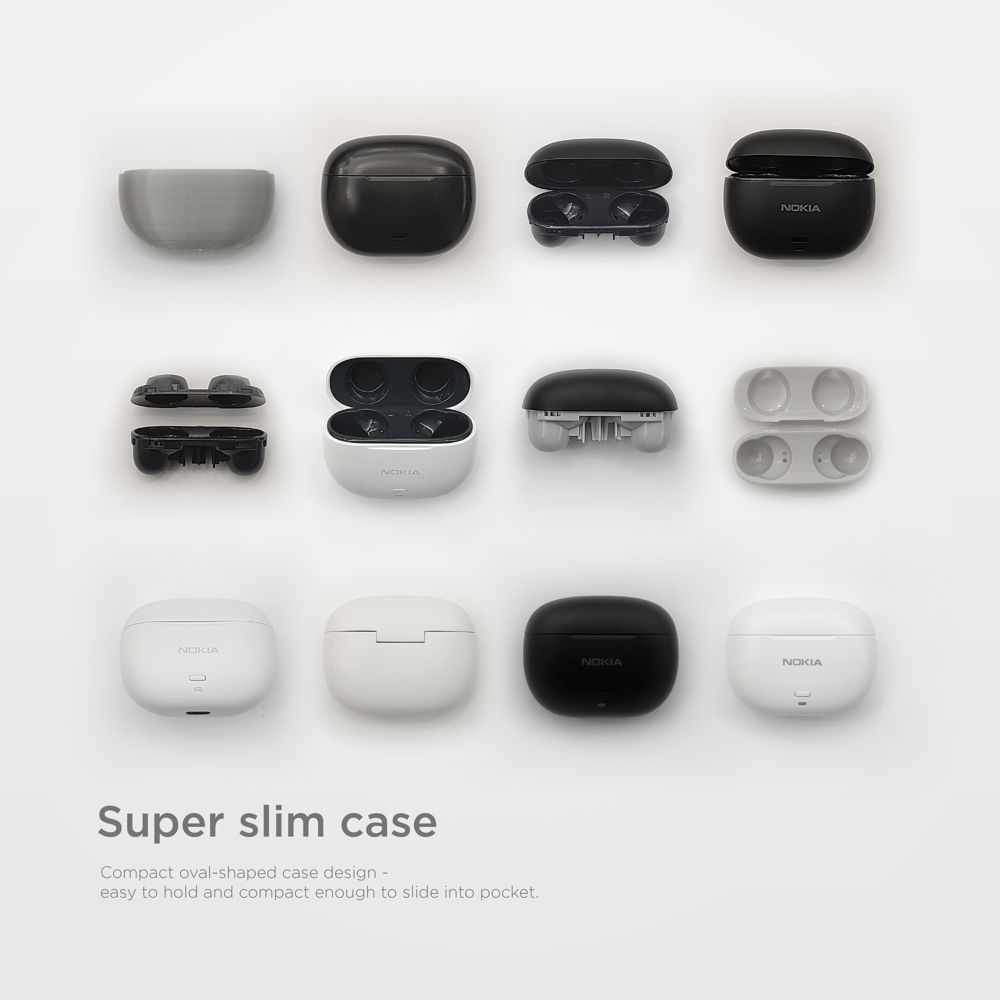
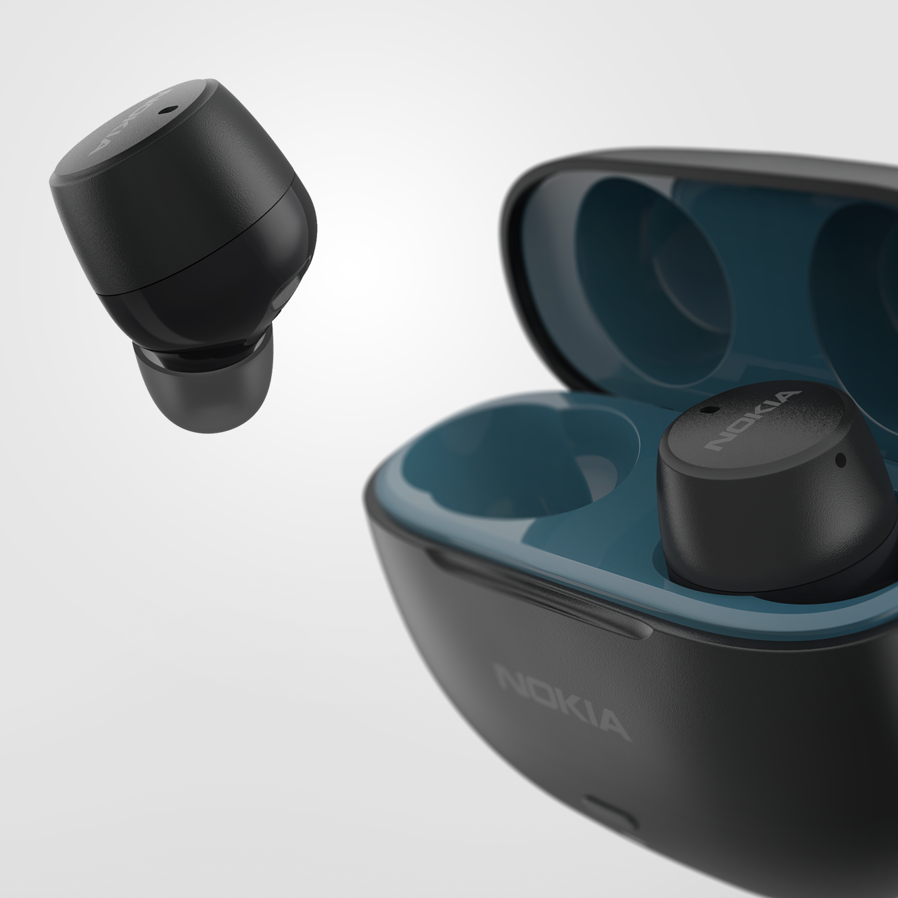
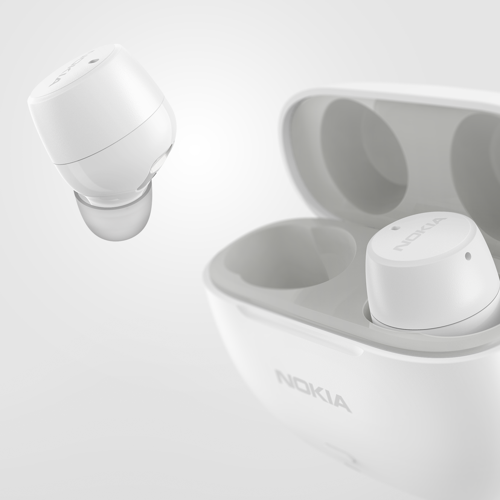
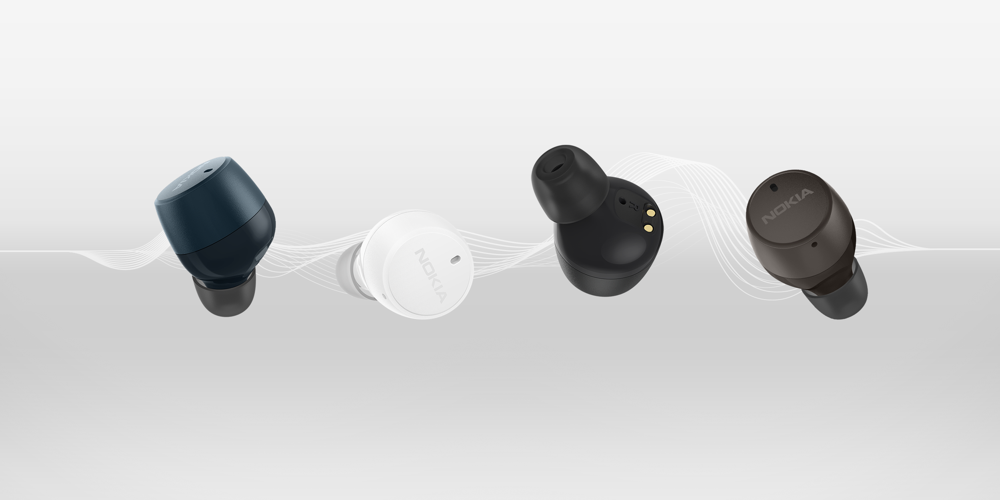
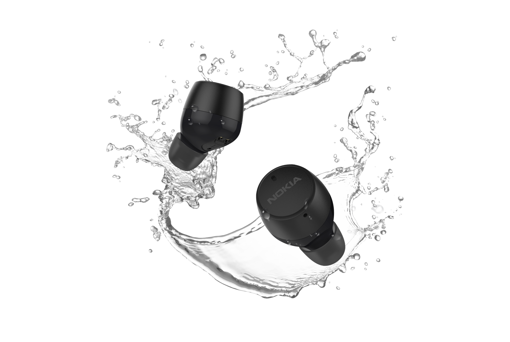

NOKIA
MICRO EARBUDS
PRO
A compact earbuds design that fits ergonomically in ears for greater comfort and better sound,
while minimising its size.
Moodboard
Ergonomic – Soft – Pocketable – Harmonious – Urban

The functionality of a product often determines its form, especially for a delicate product like earbuds.
To balance both aspects, a design should begin with the research on user pain points for existing products.
Comfortability is one of the elements a user cares most when finding a pair of earbuds.
Therefore paying attention to factors like – product form, fitting weight, sweet spot and grip – when designing
would help maximise fundamental functions without compromising its visually appealing aspects.

Ergonomic design
Everyone’s ears and ear canals are different in sizes and shapes, so even if those one-size-fits-all earbuds
are made according to standardised measures, it will not fit every person perfectly.
The tapered and rounded fit helps form a tight but comfortable seal for a better noise isolation.

Ergonomic testing
Apart from user testing, pressure mapping assessment was also undertaken to help identify areas on
the earbuds that tend to be high or low pressures, hence quantify comfort.




Build to last
Discreet design with a durable build.


Exploded view


IPX5
Perfect for outdoors.
The earbuds are waterproof, sweatproof, and workout friendly.

CMF selection
A combination of matte and glossy housings.
A selection of both tone-on-tone and dual-colour on the case and earbuds, aim to add playfulness
to the product while retaining its minimal characteristics.

In context visuals